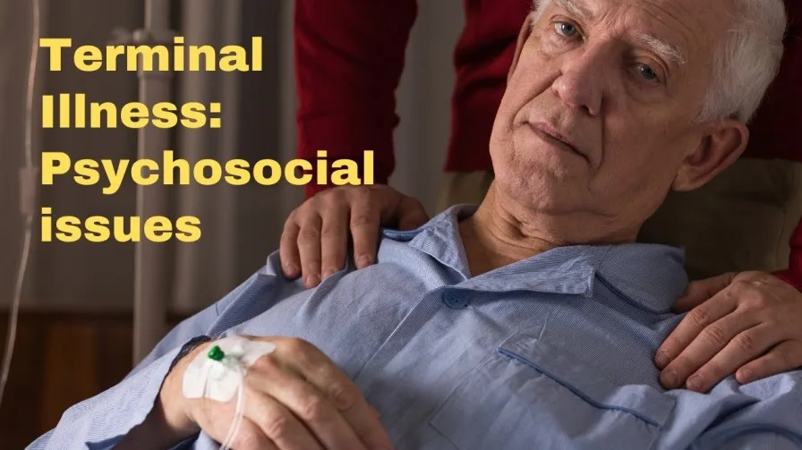

Expanded Nursing Uganda Explanation
Psychosocial support to terminally ill patients should be reviewed through safe maternal and newborn assessment, early recognition of danger signs, respectful communication and timely referral. Connect the definition to vital signs, bleeding, fetal or newborn wellbeing, patient education and local protocol requirements.
01 Psychosocial support to terminally ill patients
Terminal illness refers to a condition that cannot be cured and is expected to result in the patient’s death within a certain timeframe. This devastating diagnosis not only affects the physical health of the individual but also has profound emotional and psychological implications. The knowledge that one’s life will soon come to an end can elicit feelings of fear, sadness, and anxiety, both for the individual facing the illness and their loved ones.
02 Terminal Illnesses
- Cancer . Cancer is a group of diseases involving abnormal cell growth with the potential to invade or spread to other parts of the body.
- Dementia . Dementia is a general term for loss of memory, language, problem-solving and other thinking abilities that are severe enough to interfere with daily life.
- Heart disease . Heart disease is a group of conditions that affect your heart. Heart diseases can be caused by a number of factors, including high blood pressure, high cholesterol, smoking, and obesity.
- Lung disease . Lung disease is a general term for any condition that affects your lungs. Lung diseases can be caused by a number of factors, including smoking, air pollution, and infections.
- Neurological diseases . Neurological diseases are diseases that affect the brain, spinal cord, or nerves. Neurological diseases can be caused by a number of factors, including genetics, infections, and toxins.
- End-stage renal disease . End-stage renal disease is a condition in which the kidneys can no longer function properly. End-stage renal disease can be caused by a number of factors, including diabetes, high blood pressure, and infections.
- HIV/AIDS . HIV/AIDS is a chronic, life-threatening condition caused by the human immunodeficiency virus (HIV). HIV attacks the body’s immune system, making it difficult to fight off infections.
- Amyloidosis . Amyloidosis is a group of diseases in which amyloid proteins build up in organs and tissues. Amyloid proteins are abnormal proteins that can’t be broken down by the body.
- Lou Gehrig’s disease . Lou Gehrig’s disease, also known as amyotrophic lateral sclerosis (ALS), is a progressive neurodegenerative disease that affects nerve cells in the brain and spinal cord. ALS causes muscle weakness and wasting, which can eventually lead to paralysis and death.
- Parkinson’s disease . Parkinson’s disease is a chronic, progressive neurological disorder that affects movement. Parkinson’s disease is caused by the loss of dopamine-producing cells in the brain.
03 Key Components of Psychosocial Support
- A . Emotional support : Nurturing mental well-being Emotional support plays a pivotal role in promoting the mental well-being of terminally ill individuals. This component involves actively listening to their concerns, validating their emotions, and offering empathy and compassion. Providing a safe space where patients can freely express their fears, hopes, and anxieties can contribute significantly to their overall emotional well-being. By addressing emotional needs, healthcare providers help alleviate distress and foster a sense of emotional resilience during their journey.
- B. Counseling and therapy : Addressing psychological distress Psychological distress commonly accompanies terminal illness, ranging from depression and anxiety to existential crises. Counseling and therapy offer a structured and supportive environment for individuals to explore these complex emotions and develop coping strategies. Trained professionals can facilitate cognitive-behavioral therapy, creating a space for patients to challenge and reframe negative thoughts, promoting adaptive coping mechanisms.
- C. Social support : Fostering connections and combating isolation Social support plays a critical role in promoting the well-being of terminally ill individuals. Encouraging connections with loved ones, friends, and support groups can help combat the feelings of isolation that often accompany terminal illness. By fostering a supportive network, patients can find comfort, share experiences, and derive strength from the understanding and empathy of others navigating similar journeys.
- D. Spiritual care : Enhancing existential well-being Recognizing the spiritual dimension of individuals facing terminal illness is vital in providing comprehensive psychosocial support. Spiritual care may involve assisting patients in exploring their values, beliefs, and finding meaning in their lives. By acknowledging and respecting their spiritual needs, healthcare professionals can foster a sense of existential well-being and promote inner peace amidst the challenges of the illness.
- E. Supporting families and caregivers : Recognizing their crucial role Psychosocial support should extend beyond the patient and encompass the families and caregivers who play an integral role in their care. Recognizing and addressing the emotional and psychological well-being of families and caregivers are paramount. By offering support groups, counseling, and respite care, healthcare providers can alleviate the burden and stress faced by these individuals, ensuring they have the resources and support they need to provide optimal care and maintain their own well-being.
04 Signs and Symptoms faced by patients with terminal illnesses
- Pain and availability of palliative care
- Sleeping
- Nutritional Support.
- Medication Side effects
- ADL’s(mobility, bathing, toileting)
- Changes in Responsiveness.
- Anger, embarrassment,
- Exhaustion
- Sleeping.
- Physical requirements of caregiving.
- Nutritional support
05 Management of Terminal illness
Manage according to symptoms, click here for more
Affective :
- Antidepressant therapy is generally well-tolerated in most cases.
- Expert consensus recommends starting treatment promptly for depression.
- Psychostimulants, SSRIs, and tricyclic antidepressants are commonly used for end-of-life depression.
- Sertraline, paroxetine, mirtazapine, and citalopram have shown effectiveness in treating fatigue and depression in patients nearing the end of life.
- Methylphenidate has been found effective in addressing low energy and apathy in patients with cancer or HIV.
- The effectiveness of pharmacologic treatment for anxiety in palliative care is inconclusive according to a Cochrane review.
Cognitive :
- Assess the client and family’s understanding of the prognosis and address any uncertainties.
- Provide information on the nature, extent, and trajectory of the illness.
- Discuss the meaning and impact of the illness.
- Explain symptoms and how to manage emergencies.
- Address financial and legal concerns, as well as end-of-life decisions and options.
- Guide the client and family through the process of death and dying.
Environmental :
- Ensure continuity of care and a structured approach in the care process.
- Provide necessary supplies and accommodations for both the client and caregivers.
- Inform about community resources for shopping, cleaning, and transportation.
- Pay attention to sensory stimuli and create a comfortable environment.
- Consider environmental factors in both hospital/long-term care facilities and home settings.
06 UNMEB related question. (feb 2022)
33 (b) Outline 12 reasons why terminally ill patients die with uncontrolled pain
- Inadequate pain assessment: Failure to accurately assess the intensity and characteristics of the patient’s pain can lead to ineffective pain management and uncontrolled pain.
- Underestimation of pain severity: Healthcare professionals may underestimate the severity of pain experienced by terminally ill patients, leading to insufficient treatment and uncontrolled pain.
- Fear of opioid addiction: Misconceptions and fears surrounding opioid addiction may result in healthcare providers prescribing lower doses of pain medication than necessary, resulting in inadequate pain relief.
- Inadequate knowledge of pain management: Lack of knowledge or training in pain management techniques can contribute to ineffective pain control and uncontrolled pain.
- Suboptimal medication administration: Incorrect administration techniques, inadequate dosing intervals, or failure to provide breakthrough pain medication as needed can result in uncontrolled pain.
- Reluctance to escalate pain medication: Healthcare providers may be hesitant to increase pain medication doses or switch to stronger opioids, leading to uncontrolled pain due to fear of side effects or concerns about respiratory depression.
- Lack of access to pain specialists: Limited availability of pain specialists or palliative care teams can result in inadequate pain management, especially in resource-limited settings.
- Physical tolerance and opioid titration: Some patients may develop tolerance to opioid medications over time, requiring dose adjustments or switching to alternative medications. Failure to titrate opioids appropriately can lead to uncontrolled pain.
- Psychological factors: Emotional distress, anxiety, or depression can exacerbate the experience of pain and make it more challenging to achieve adequate pain control.
- Inadequate support for non-pharmacological interventions: Non-pharmacological approaches, such as physical therapy, relaxation techniques, or complementary therapies, can complement pain management. However, limited access or lack of support for these interventions can contribute to uncontrolled pain.
- Co-existing medical conditions: The presence of comorbidities, such as renal or hepatic impairment, can affect the choice and dosing of pain medications, potentially leading to inadequate pain control.
- Communication barriers: Ineffective communication between patients, caregivers, and healthcare providers can impede the understanding of pain symptoms and hinder appropriate pain management, resulting in uncontrolled pain.
07 Nursing Uganda Clinical Lens
Use Psychosocial support to terminally ill patients as a practical nursing topic, not only a memorized definition. Adapt assessment and care to age, weight, development, caregiver knowledge and family support.
- What to understand first: define psychosocial support to terminally ill patients, identify the normal or expected pattern, then explain what changes when the patient is unwell.
- Why it matters in care: the nurse must recognize risk early, explain findings clearly, document accurately and know when to escalate.
- How to revise it: connect each point to assessment, nursing diagnosis or care problem, intervention, rationale and evaluation.
08 Assessment Guide
- Airway, breathing, circulation, hydration, temperature, feeding, activity and danger signs.
- Weight-based medicines, immunization status, growth, development and caregiver concerns.
- Signs that may be subtle in children, including lethargy, poor feeding, fast breathing or convulsions.
09 Nursing Priorities, Rationales and Outcomes
- Use age-appropriate communication and involve the caregiver.
- Prevent dehydration, hypothermia, medication errors and delayed referral.
- Teach home care, danger signs and follow-up clearly.
The rationale for these priorities is patient safety: nursing actions should prevent deterioration, reduce discomfort, support recovery and create clear evidence for the next caregiver.
- Expected outcome: The child is clinically improving, caregiver instructions are understood and follow-up is arranged.
10 Patient Teaching and Revision Check
- Explain psychosocial support to terminally ill patients in simple language the patient or caregiver can repeat back.
- Teach warning signs, medicine or follow-up instructions, hygiene or lifestyle points where relevant.
- For exams, prepare a short answer using: definition, causes or risk factors, signs, assessment, management, complications and prevention.
- For ward practice, document baseline findings, actions taken, patient response and the plan for review.
Illustrations and Diagrams (5)



Related Video Lectures
Watch nursing lecture videos on YouTube for this topic. Opens in a new tab.
Watch on YouTubeExternal link: YouTube may use its own cookies and terms. Nursing Uganda is not affiliated with YouTube.